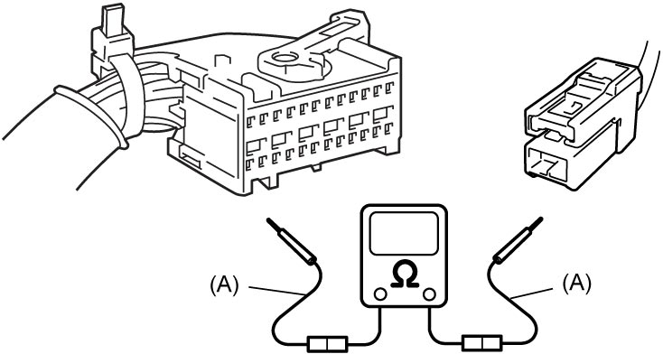
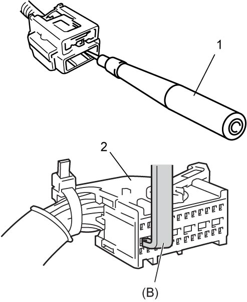
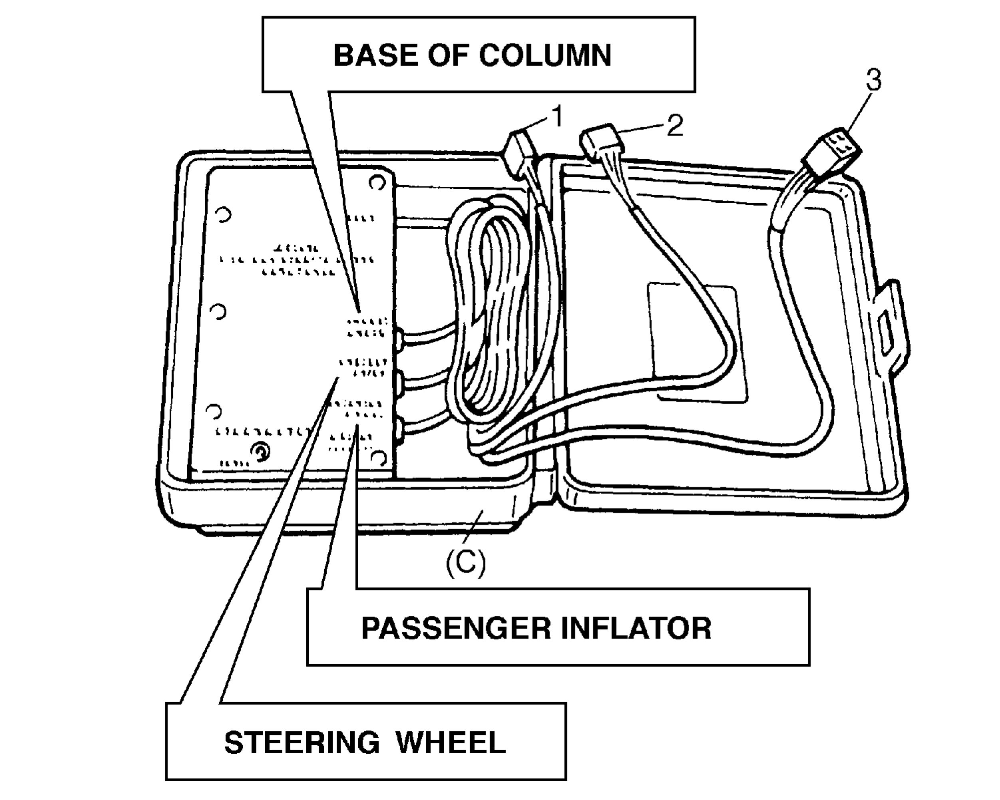

8B
| Use of Special Tools |
Be familiar with tools listed under heading “Special Tool”. Study proper use of measurement tools such as Air Bag Driver / Passenger Load Tool, Connector Test Adapter Kit and digital multimeter.
This must be used whenever a diagnostic procedure requests checking or probing a terminal.
Using appropriate adapter in special tool (A) will check that no damage to terminal will occur from multimeter probe, such as spread or bend.

 "Expand image")
The adapter (1) will also give an idea of whether or not contact tension is sufficient, helping to find an open or intermittent open due to poor terminal contact. SDM shorting bar release tool (B) is included in connector test adapter kit. Inserting it into SDM connector (2) will release shorting bar.

 "Expand image")
This tool is used as a diagnostic aid and safety device to prevent inadvertent air bag (inflator) module deployment.
The load tool has three connectors attached to its case which are electrically functional and serve as resistive load substitutions.
Use “STEERING WHEEL” connector instead of resistance load of driver / passenger air bag (inflator) modules, knee air bag (inflator) module, seat belt pretensioner, side-air bag (inflator) module and curtain air bag (inflator) module.
Use “BASE OF COLUMN” connector instead of resistance load of driver air bag (inflator) module and contact coil.
Do not use “PASSENGER INFLATOR”.
By connecting load tool instead of inflator modules and pretensioners, service work to decide location of cause of trouble – whether it is in harness or in component – can be performed.

 "Expand image")
| 1. | Driver air bag (inflator) module and contact coil to connector |
| 2. | Driver / passenger air bag (inflator) modules, knee air bag (inflator) module, seat belt pretensioner, side-air bag (inflator) module and curtain air bag (inflator) module to connector |
| 3. | Not used |